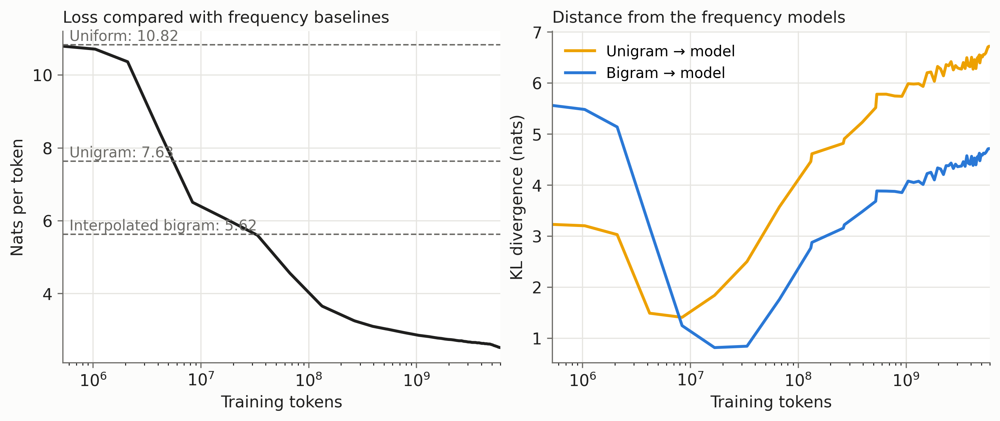
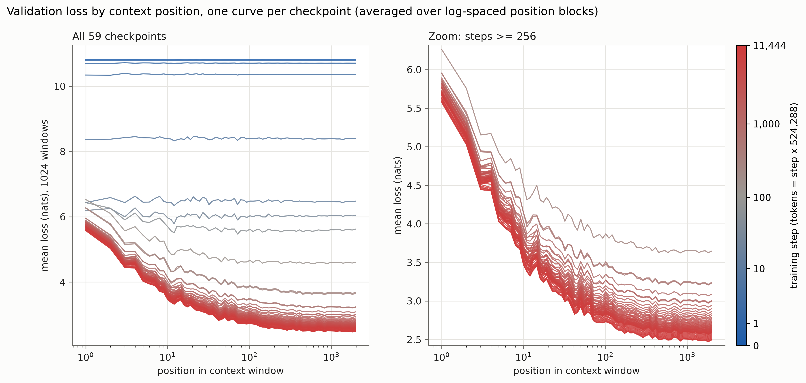
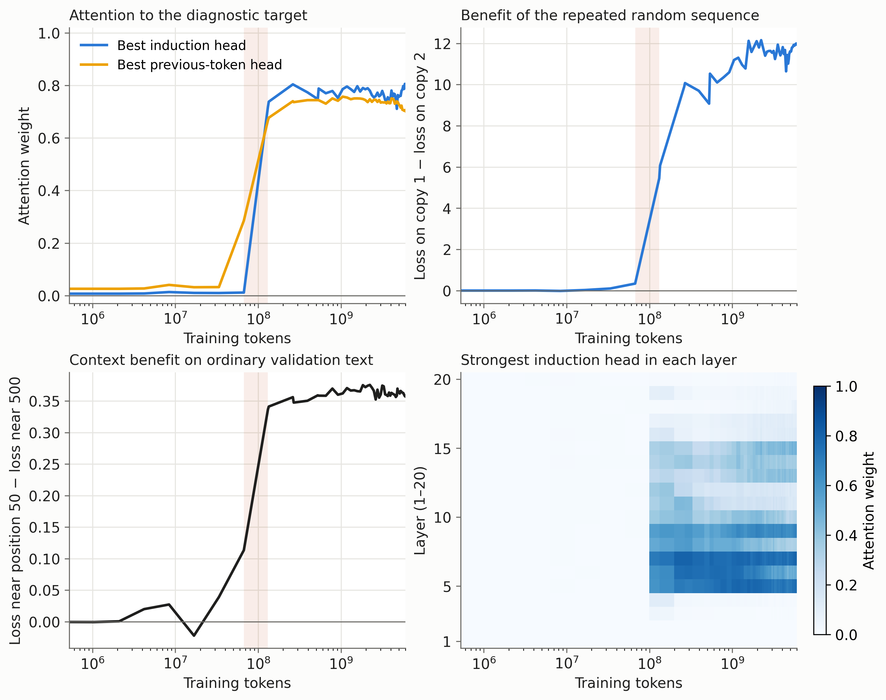
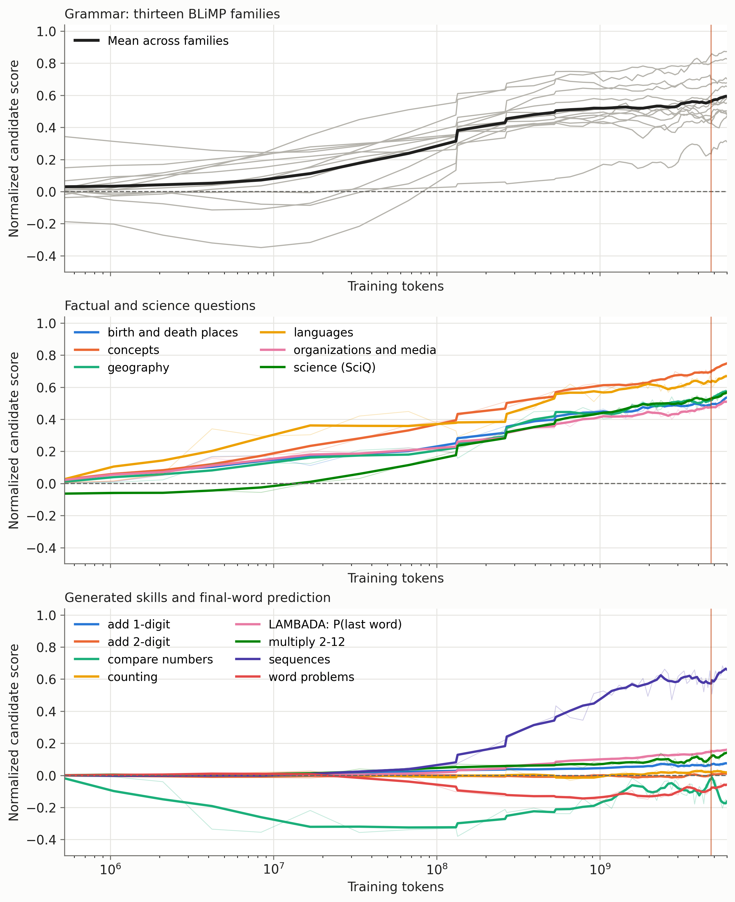
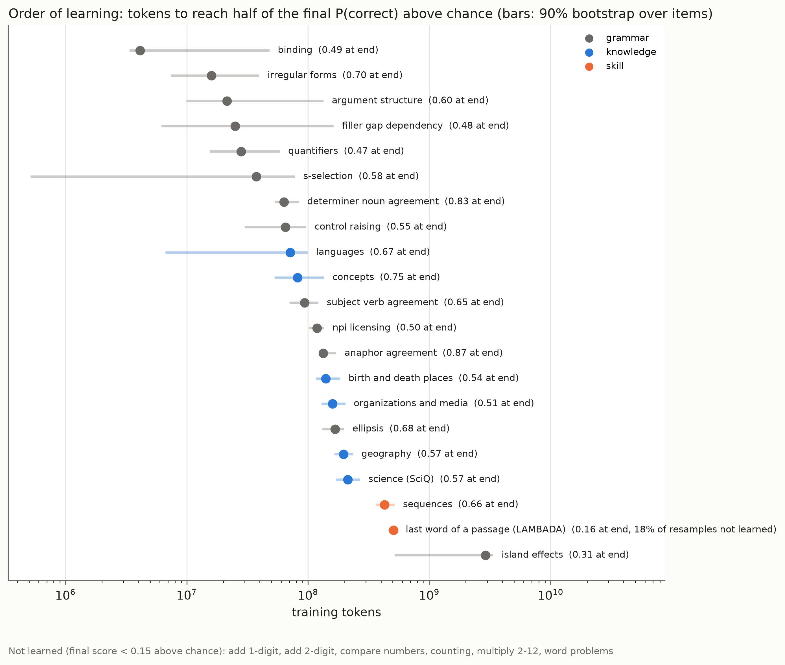
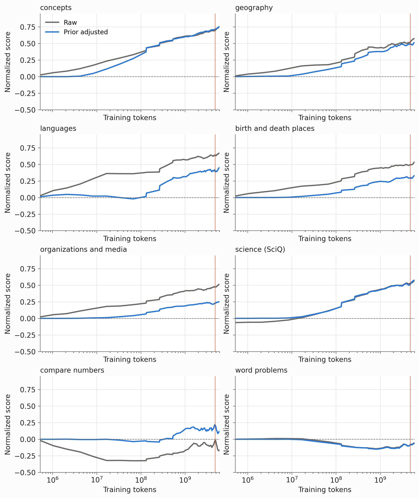
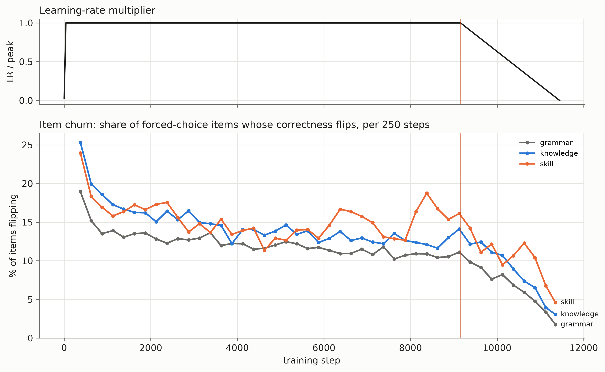
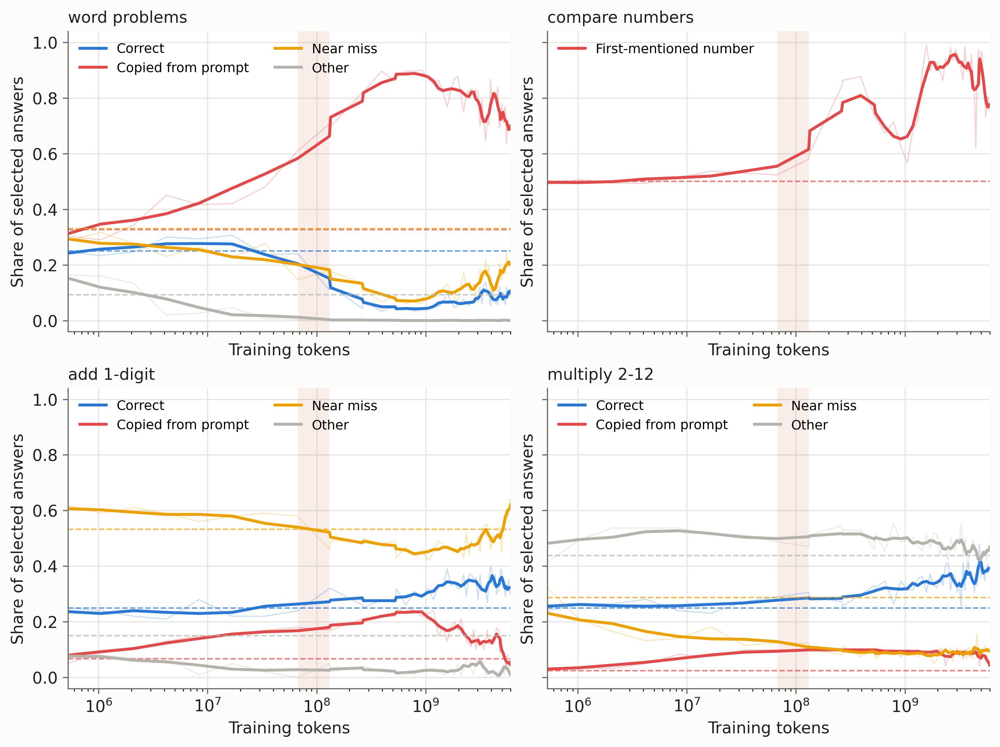
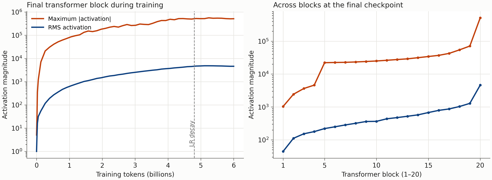

At the end of training, the model could continue “Once upon a time, in a small village by the sea,” with a perfectly serviceable story about two curious animals named Max and Lily. It could also complete the following prompt:
Tom has 5 apples. Tom buys 3 more apples. Now Tom has
with:
5 apples.
The grammar is fine. The apples are less well accounted for.
In Part I, I described training this model from scratch: 522 million parameters, 6 billion token presentations, and about sixteen hours on two GPUs. The main concern was how to choose the data, model size and training schedule. Here I want to understand what happened during the run. Did the model first learn grammar, then acquire facts, then begin to manipulate them? When did it start using its context? And why did elementary arithmetic remain so poor while the average prediction loss kept improving?
To investigate these questions, I saved checkpoints densely at the beginning and then at regular intervals. There are 59 snapshots, including initialization and the final model. Each optimizer step processes 524,288 tokens, so step 100 already corresponds to about 52 million tokens. “Early in training” is a relative term.
There is an immediate difficulty: a decreasing average loss need not mean that every behavior improves. If a class of examples accounts for a fraction \(\varepsilon\) of the evaluation distribution, one can write
\[ \mathcal L=(1-\varepsilon)\mathcal L_{\rm common} +\varepsilon\mathcal L_{\rm rare}. \]
When \(\varepsilon\) is small, a modest improvement on common examples can compensate for a large deterioration on the rare ones. There is nothing in maximum likelihood that assigns extra importance to an arithmetic error merely because it looks embarrassing to a human reader. To see what is being learned, we need to resolve the average into more informative measurements.
Before the model pays much attention to the prompt
Consider first a predictor that ignores its context and simply uses the frequency of each token in the training corpus. If \(q_1(x)\) is this empirical unigram distribution, it predicts
\[ p(x_t\mid x_{<t})=q_1(x_t). \]
Such a model has no grammar, but it already knows that spaces and common word pieces are more likely than unusual symbols. A bigram predictor adds one token of context,
\[ p(x_t\mid x_{<t})=q_2(x_t\mid x_{t-1}). \]
It can learn frequent adjacent pairs, but cannot distinguish two contexts that end in the same token. These are useful reference points for the first few optimizer steps.
I estimated unigram and bigram tables from 200M training tokens, and evaluated them on a small, fixed collection of validation windows. A uniform predictor over the model vocabulary has a loss of about \(10.82\) nats per token. The unigram model reduces this to \(7.63\). An interpolated bigram model, combining conditional counts with the unigram distribution to handle rare or unseen pairs, reaches \(5.62\). The interpolation weight was selected on these same validation windows, so the last number is a convenient local baseline rather than a separately tuned test-set result.
The transformer passed the unigram baseline by step 16, after about 8M tokens. It passed the bigram baseline around step 64, after about 34M tokens.

Crossing a baseline loss does not mean that the transformer implements that baseline. Two very different predictive distributions can have the same cross-entropy. To look more directly at its predictions, I also measured quantities of the form
\[ \mathbb E_c\left[ \operatorname{KL}\big(q(\cdot\mid c)\,\|\,p_\theta(\cdot\mid c)\big) \right], \]
where \(q\) is the unigram distribution, or the empirical conditional bigram distribution, and the average is over validation contexts. The bigram table used for this distance is the empirical table itself; the interpolated version above is used for the loss baseline.
The distance to the unigram distribution was smallest near step 16. The distance to the bigram distribution was smallest near step 32, after about 17M tokens. Both distances then increased, while the prediction loss continued to decrease. The model was moving away from these simple distributions in a direction that made it a better predictor.
The minimum distances were not zero. The network’s predictions pass through regions resembling these coarse statistics, with several kinds of learning occurring at once. This is more approximate than literally implementing one model and then the other, but the distances give us a way to measure the resemblance.
The generated text makes the early limitation rather visible. At step 16, the prompts “The capital of Australia is”, “Black holes are regions of spacetime where”, and “Once upon a time, in a small village by the sea,” all led, after slightly different first words, to the fragment
How to create better than a unique.
The samples used the same random seed for each prompt, with temperature \(0.8\) and top-\(50\) sampling. When predictive distributions are nearly insensitive to the prompt, using the same random numbers exposes that similarity: unrelated beginnings can produce nearly identical continuations. These samples are an illustration, not a formal test of complete independence from context. By roughly steps 128 to 256, the continuations had become much more specific to their prompts, even when what they said was nonsense.
How much does a longer context help?
The simplest way to measure context use is to compare prediction loss near the beginning and near the end of a text window. Let
\[ \ell_\theta(j) =\mathbb E\left[-\log p_\theta(X_{j+1}\mid X_0,\ldots,X_j)\right]. \]
At position \(j=0\), the model has one token of context. At position \(j=500\), it has 501. If it can exploit information from earlier in the passage, one expects its loss to be lower at the later positions.
For an ideal predictor, there is a useful information-theoretic version of this statement. Suppose \(R\) is the recent context, \(Z\) the additional earlier context, and \(Y\) the next token. Then the reduction in optimal expected log loss is
\[ H(Y\mid R)-H(Y\mid R,Z)=I(Y;Z\mid R)\geq0. \]
The conditional mutual information measures how much the earlier text tells us about the next token beyond what is already in the recent text. Our measured position difference is not exactly this quantity: the model is imperfect, and different positions correspond to different targets. But it gives a natural way to think about the benefit we are trying to detect. A model that ignores \(Z\) cannot realize that benefit.
I evaluated all checkpoints on the same 1,024 non-overlapping validation windows, recording the loss separately at every predicted position. Averaging each curve recovers the usual validation loss. At the 47 checkpoints with a matching training-time evaluation, the binned curves agreed with the logged values to within \(0.00032\) nats. This check was useful: an off-by-one error in the context length would otherwise be easy to overlook.

Two features of these curves are interesting. First, the benefit of context becomes much more pronounced early in training. The loss difference between positions near 50 and 500 rises from about \(0.11\) nats at step 128 to \(0.34\) at step 250. At the final checkpoint it is \(0.36\). Much of this particular context advantage therefore appears between roughly 67M and 131M training tokens. Both positions continue to improve afterwards, so the nearly constant difference does not mean that learning has stopped.
Second, the very first position gets worse during part of this transition. Its loss rises from \(6.19\) at step 32 to \(6.43\) at step 64 and \(6.53\) at step 128, even as the average loss falls quickly. The same parameters must serve short and long contexts. Training mostly rewards them for predicting positions with substantial context, because there are many more such positions in each window. Better average performance can come with a temporary cost when only one preceding token is available.
The curves show a redistribution of predictive performance, although they do not identify its mechanism. Each individual position averages only 1,024 targets, with a standard error around \(0.08\) nats within a curve. Comparisons across checkpoints reuse the same targets and are more precise, but small wiggles along a single curve should not be overinterpreted.
Most of the context benefit in this evaluation is obtained by about 500 tokens. The curve is comparatively flat between positions 500 and 2,047. This concerns average next-token prediction on these windows. It does not establish that the model can retrieve an arbitrary fact from any location in a 2,048-token context.
A circuit for continuing a repeated pattern
What could let a transformer exploit a longer context? A particularly simple possibility is to recognize that a token has appeared before and copy what followed it. Consider
\[ \cdots\; A\;B\;\cdots\;A\;? \]
If the earlier occurrence of \(A\) was followed by \(B\), then \(B\) is a reasonable candidate after the later occurrence. This rule requires no prior knowledge of what \(A\) and \(B\) mean. It can be applied to arbitrary tokens within the current sequence.
Attention heads exhibiting this pattern are commonly called induction heads (Olsson et al. 2022). The target of the attention is important: at the second \(A\), the head should attend to the earlier \(B\), not merely to the earlier \(A\). Attention to a matching token alone does not retrieve its successor.
One way to implement this uses two layers. An earlier head attends to the previous token, making information about \(A\) available in the representation at the position of \(B\). A later head can then compare the current \(A\) with the information stored in that position’s key, and retrieve a value containing information about \(B\). In a schematic notation,
\[ \underbrace{A\;B}_{\text{store information about }A\text{ at }B} \quad\cdots\quad \underbrace{A}_{\text{match }A\text{ and retrieve }B}. \]
This is a plausible mechanism for using an example in the prompt without changing the model parameters. It is also sufficiently specific to measure.
I constructed 32 sequences of the form \([\mathrm{EOT},R,R]\), where \(R\) consists of 100 distinct tokens drawn uniformly from the GPT-2 vocabulary. For each attention head, the induction score is the mean attention weight placed on the successor of the matching token in the first copy, while processing the second copy. A separate score measures attention to the immediately preceding token. These random sequences are deliberately unlike ordinary prose: familiar semantic associations should not explain successful continuation.

At step 128, the strongest previous-token score was about \(0.29\), while the strongest induction score was still only \(0.01\). At step 250, these scores were about \(0.67\) and \(0.72\). Strong induction patterns appeared in the middle layers. At the end of training, the best induction score was about \(0.80\).
The model’s predictions on the repeated sequence also changed substantially. At the final checkpoint, the average loss was about \(12.8\) nats on the first copy and \(0.88\) on the second. The first copy is sampled from an unnatural, nearly uniform token distribution; a language model that prefers ordinary text can do worse on it than a uniform predictor. The second copy is highly predictable from the first. The model has learned to exploit this distinction.
The increase in induction attention and the increase in the real-text context advantage occur in the same checkpoint interval. This agrees with the mechanism studied by Olsson et al. (2022), and it is much more informative than observing that the loss has gone down. But attention weights alone do not establish how much a head contributes to the final prediction. Values, output projections and the rest of the network also matter. I have not ablated these heads or intervened on the proposed information pathway in this model. The evidence here is temporal and behavioral; a causal attribution would require those additional experiments.
Nor was there a dramatic loss spike marking the transition. Training showed a slower period around steps 30 to 50, followed by faster improvement around steps 60 to 100. The induction measurements bracket their strongest change between steps 128 and 250. Calling all this a precisely located “phase transition” would give the checkpoint spacing more resolution than it has.
Grammar, facts, and a definition of “learned”
The next question is whether different kinds of predictions improve at different times. To investigate it, I froze a collection of 6,577 items divided into 28 fields, and evaluated exactly the same items at each checkpoint.
The grammar probes use 13 families from BLiMP (Warstadt et al. 2020), which compares a grammatical sentence with a minimally altered ungrammatical alternative. Knowledge probes use five groups of relations from LAMA T-REx (Petroni et al. 2019), such as locations and languages, with candidate answers restricted to single GPT-2 tokens. SciQ contributes science questions (Welbl, Liu, and Gardner 2017). I also generated small arithmetic, comparison, counting and sequence tasks. Finally, LAMBADA asks for the last word of a passage whose broader context is intended to be useful (Paperno et al. 2016).
For example, one grammar item compares “The grandmothers of Vanessa do approach Maria” with the same sentence using “does”. The subject is plural even though the intervening name is singular. A geography item asks for a continuation of “Damascus is the capital of”, choosing among “Peru”, “Karachi”, “Judah” and “Syria”. A sequence item asks what follows “21, 22, 23,”. These are small, precisely specified tasks. Their construction will matter when interpreting how much the scores tell us.
Before plotting anything, we need to decide what the vertical axis means. For a prompt \(c\) and candidate answers \(a_1,\ldots,a_K\), let
\[ s_j=\log p_\theta(a_j\mid c), \qquad \pi_j=\frac{\exp(s_j)}{\sum_{u=1}^K\exp(s_u)}. \]
For a multi-token answer, \(s_j\) sums the token log probabilities. For a grammar pair, it is the log probability of the entire candidate sentence. The quantity \(\pi_j\) compares the candidates with one another. It is not the probability that the model will freely generate answer \(a_j\): the normalization discards every continuation outside the supplied list. It is also not automatically a calibrated probability that the answer is true.
I use the mass on the correct option as a continuous score, and rescale it so that equal mass on all \(K\) options corresponds to zero:
\[ S=\frac{\pi_{\rm correct}-1/K}{1-1/K}. \]
The score is one when all the candidate mass is on the correct option, and can be negative. For example, with four options, \(\pi_{\rm correct}=0.10\) gives \(S=-0.20\). This rescaling makes a two-sentence grammar comparison and a four-answer science question easier to display together, although it does not make their difficulty or interpretation identical. LAMBADA is treated separately: its score is the probability of the held-out final word, which may span several tokens, without a fixed candidate list.

The broad pattern is that many grammatical contrasts improve very early, whereas factual scores keep rising over more of the run. This seems plausible: grammatical regularities recur across many sentences, while a particular fact may be supported by a much smaller set of passages. But there is substantial overlap. Some facts improve while some grammatical distinctions are still weak, and the difficult island-effect probes remain slow. The data do not give a clean sequence in which grammar is completed before knowledge begins.
To put dates on the curves, I measured the last upward crossing of half of each field’s final score, after a five-checkpoint running-median smoothing. Taking the last crossing avoids assigning an early learning time to a transient improvement that disappears. Fields with a final score below \(0.15\) were excluded from this timing comparison. In the analysis files they are labelled “not learned”; that is an operational threshold for this plot, not a claim that the model possesses no relevant information.

Some grammatical fields reached this halfway point after only about 4M tokens; many others did so between a few tens and a few hundreds of millions. The knowledge fields crossed it between roughly 70M and 210M tokens. Sequence completion reached it near 430M, and LAMBADA near 510M. Island effects were much later, around 2.9B tokens.
The intervals in this figure are 90% intervals from bootstrapping the items within each field. They quantify sensitivity to which questions are included. All curves come from one training trajectory, so they do not quantify variation across independently trained models. Also, “half learned” is a slightly treacherous expression: half of a weak final score can be reached quickly. The plot is best read as a comparison of progress along the observed trajectories.
Knowing a fact, or liking an answer?
Suppose a model completes many language questions with “English”, and many birthplace questions with “London”. If those strings occur frequently among the correct answers, the model can achieve a respectable score without using the subject of the question very effectively. A multiple-choice score combines information about the relation being queried with preferences for the answer strings themselves.
This is a known difficulty in evaluating language models through candidate completions (Holtzman et al. 2021). To examine it here, I scored each answer both with the full prompt and with a reduced prompt containing only the relation’s wording, such as “was born in”. The adjusted score is
\[ s_j^{\rm adj} =\log p_\theta(a_j\mid c) -\log p_\theta(a_j\mid c_0) =\log\frac{p_\theta(a_j\mid c)}{p_\theta(a_j\mid c_0)}, \]
where \(c_0\) is the reduced prompt. The candidate softmax is then applied to these adjusted scores. An answer scores well when adding the full question increases its likelihood relative to that baseline. An answer that was already highly likely after the relation words receives less credit merely for remaining likely.
The analysis calls this “calibration”, but the term should not suggest that the resulting numbers are calibrated probabilities of truth. The choice of \(c_0\) matters, and subtracting a language-model score can remove useful information as well as a nuisance preference. It is a diagnostic for sensitivity to answer priors, not a universally correct replacement for the original score.

The effect is quite uneven. Averaging over the last five checkpoints, the normalized language score falls from \(0.67\) to \(0.45\), birthplace and death-place questions from \(0.54\) to \(0.33\), and organizations and media from \(0.51\) to \(0.25\). Concepts stay near \(0.75\), geography changes from \(0.57\) to \(0.52\), and SciQ stays near \(0.57\). Some of the raw factual performance is therefore sensitive to a preference for common answer strings, while some survives this correction quite well.
Number comparison is an especially useful example. Its raw normalized score is about \(-0.16\), but the adjusted score is about \(0.12\). The original score was concealing some usable information. This also cautions against interpreting a below-chance score as a direct measurement of the absence of a skill: the way a question is posed and scored can interact with the model’s other preferences.
An answer can be right, wrong, and right again
A second difficulty appears when following individual items through training. Let \(A_t\) be the set of questions answered correctly at checkpoint \(t\), and let \(n\) be the total number of questions. The change in accuracy is
\[ \frac{|A_{t+1}|-|A_t|}{n} =\frac{|A_{t+1}\setminus A_t|-|A_t\setminus A_{t+1}|}{n}. \]
It records new correct answers minus answers that ceased to be correct. The fraction of items whose correctness changes is instead
\[ \frac{|A_{t+1}\mathbin{\triangle}A_t|}{n} =\frac{|A_{t+1}\setminus A_t|+|A_t\setminus A_{t+1}|}{n}. \]
This second quantity can be large even when the first is almost zero. An accuracy curve that looks flat can hide substantial movement in both directions.
During the constant-learning-rate phase, about 11–17% of probe items changed correctness between checkpoints separated by 250 steps, or 131M tokens. Near the end of the learning-rate decay, this fell to about 2–5%.

Some of these changes may be small score differences crossing zero. A barely preferred correct answer can become a barely preferred incorrect answer without a dramatic change in the predictive distribution. This is one reason for plotting continuous candidate mass as well as hard accuracy. The observation still makes a literal picture of facts being permanently added to a growing internal database rather misleading for this run.
The generated samples offer a memorable, if noisier, illustration. At step 4,000, the prompt “The capital of Australia is” produced a continuation containing “Canberra”, albeit embedded in a confused paragraph. At the final checkpoint, it began:
located in Melbourne. How fast are bees? The sting of a bee is not quick.
A single sampled continuation does not prove that the model acquired and then forgot this fact. To establish that for a particular item, one should compare its candidate probabilities or repeated samples across checkpoints. What the example does show is why a fluent, once-correct completion is weak evidence of reliable knowledge. The fixed-item measurements make the broader instability visible without relying on one entertaining sample.
Why are the apples still missing?
Several generated skill probes were much worse than the language and knowledge results might lead one to expect. One-digit addition was only slightly above chance. Two-digit addition and counting were close to chance. The word-problem probe was below chance. Meanwhile, simple sequence completion was almost perfect by hard accuracy.
Perhaps the model did not understand the requested format. Since it was trained as a continuation model, a bare question might be an awkward way to elicit an answer. I therefore repeated the final-checkpoint evaluation with three solved examples before each question.
| Task | No examples | Three examples | Random-choice accuracy |
|---|---|---|---|
| One-digit addition | 0.310 | 0.340 | 0.25 |
| Two-digit addition | 0.223 | 0.217 | 0.25 |
| Multiplication, operands 2–12 | 0.388 | 0.298 | 0.25 |
| Counting | 0.296 | 0.204 | 0.25 |
| Word problems | 0.110 | 0.123 | 0.25 |
| Sequence completion | 0.996 | 0.991 | 0.25 |
| Number comparison | 0.377 | 0.560 | 0.50 |
These are hard accuracies at the final checkpoint, not the smoothed probability scores in the earlier figures. This distinction explains, for example, why sequence accuracy is almost one while its normalized probability score is only about \(0.66\): the correct option can win almost every time without receiving all the candidate mass.
The three examples help number comparison, but do little for addition or word problems, and hurt several other tasks. This weakens the explanation that the failures are merely caused by omitting a demonstration of the format. It does not rule out every possible prompt, a longer worked solution, or a differently trained model. The narrower conclusion is already interesting: these skills are not reliably elicited by the tested zero-shot and three-shot formats, even though other probes work well.
Copying is often a good prediction
Looking at the wrong answers is more revealing than looking at accuracy alone. On the word-problem set, 211 of the 267 wrong answers copied a number appearing in the prompt. Across all items, about 70% of the model’s selected answers were prompt numbers. Randomly choosing among the available options would do this only about 33% of the time.
This makes the apple example less mysterious. The continuation “Tom has 5 apples” repeats a locally plausible phrase and a recently mentioned number. Such repetition is often useful in ordinary text. In a word problem, however, the correct operation may require producing a new number that has not appeared anywhere in the context.
One can make the conflict explicit. Suppose a prompt contains the quantities \(a\) and \(b\), and asks for \(a+b\). A strategy that strongly favors numbers already present increases the relative scores of \(a\) and \(b\). Whenever the correct sum differs from both, this moves probability away from the answer. If the candidate list contains copied numbers as distractors, more consistent use of the copying strategy can reduce accuracy below random choice.
The candidate construction matters here. Not every item contains the same number of copyable distractors. The relevant baseline is the measured average share of available options that copy a prompt number, about \(0.327\), rather than an assumed one half. A diagnostic of a shortcut needs to compare against the shortcuts the test itself makes available.

The copying share rises from about \(0.42\) at step 32 to \(0.61\) at step 128 and \(0.71\) at step 250. Around 1B training tokens it reaches roughly \(0.86\)–\(0.89\), before falling to \(0.70\) by the end. Thus the model can become more competent at exploiting repeated material while becoming less successful on a task where repeating the material is the wrong operation.
The timing overlaps the development of induction attention and the larger context advantage. It is tempting to say that induction heads cause the arithmetic failures. These measurements do not establish that. Several parts of the network change together, and the word-problem shortcut is measured through final predictions, not through an intervention on a head. A direct test would alter the relevant attention pathway and examine both copying and arithmetic under that intervention.
Other ways of being systematically wrong
For number comparison, the final model selected the first-mentioned number in 229 of 300 items. Earlier in training, that preference was even stronger. However, the larger number comes first in exactly half the questions. A pure “choose the first number” rule would score 50%, so position preference alone cannot explain an accuracy of 38%. There is also a tendency toward the smaller number, consistent with preferences for particular number strings. The improvement after answer-prior adjustment, and after three demonstrations, is useful evidence that the raw score combines several effects.
On one-digit addition, most errors were within one or two of the correct answer. That sounds like partial arithmetic competence until one inspects the options: the distractors were deliberately designed to include near misses. In fact, 240 of the 300 incorrect options are already within two of the correct answer! A random choice among the distractors would therefore be nearly right 80% of the time. The error distribution may contain information, but the bare statement “most errors are nearly right” says considerably less than it first appears to.
Counting had an even more obvious answer preference: the model selected “three” or “eight” in 148 of 240 cases. Free continuation did not rescue the task. Given “cat cat cat cat. The word cat appears”, a greedy completion began “in the Bible in the form of a”. Given “7 + 5 =”, it produced “10”. These are failures to continue the requested computation, not merely mistakes in generating the letter of a multiple-choice answer.
The collection of errors suggests a model that has learned useful regularities of text, including repetition and common answer forms, but has not made the tested exact operations reliable. The success on sequence completion is a useful control against declaring the entire probing procedure broken. It also shows how misleading it would be to arrange all these tasks on a single scale of what seems easy to us.
Six billion tokens is not six billion arithmetic examples
Perhaps there was simply too little relevant material in the training data. To get an order-of-magnitude estimate, I scanned four of the 153 ClimbMix shards, containing about 0.22B tokens, for a few narrowly defined text patterns. Scaling their rates to 6B token presentations gave the following estimates.
| Text pattern | Matches per million tokens | Estimated presentations in 6B tokens |
|---|---|---|
One-digit addition with an answer, such as 3 + 4 = 7 |
1.04 | 6,300 |
| Two-digit addition with an answer | 0.16 | 1,000 |
| Multiplication with an answer | 1.23 | 7,400 |
| Explicit comparison, such as “71 is greater than 23” | 0.09 | 550 |
| Narrow word-problem patterns | 0.03–0.09 | 200–500 |
| “appears N times” | 0.08 | 500 |
| “Monday, Tuesday, Wednesday” | 0.05 | 300 |
| “was born in” | 4.49 | 27,000 |
| “the capital of” | 1.30 | 7,800 |
These counts are rough diagnostics of surface forms. A regular expression can miss a worked solution phrased differently, and can also match a string that is not a valid solved example. Only four shards were scanned; the sparsest rows have substantial sampling uncertainty. Because training samples windows with replacement, the rightmost column estimates presentations under that sampling scheme, not distinct examples known to have been read.
Even so, the scale is informative. Roughly 6,300 one-digit addition strings would amount to only about sixty presentations per ordered digit pair if spread evenly, which they certainly are not. About 1,000 two-digit addition strings must cover a space of 8,100 ordered pairs of two-digit positive integers. A large token count can hide rather sparse direct supervision for a specific operation.
Rarity alone cannot explain the whole result. The particular weekday pattern counted here is rarer still, yet sequence completion works extremely well. Its success can draw on many other list and sequence formats that the narrow count misses. More generally, some tasks can reuse broadly useful continuation patterns, whereas others require an exact transformation. Counting strings does not tell us how effectively their information is shared across examples.
The useful next step is an intervention on the training data. One could restart from the checkpoint before the final learning-rate decay and replace a small fraction of the remaining text, say 2%, with carefully generated arithmetic examples. A matched branch would retain the original data. Both would process the same total number of tokens with the same schedule. Held-out operand pairs and held-out phrasings would help distinguish transfer from memorizing the added templates, while the ordinary validation loss and factual probes would reveal any cost elsewhere.
That experiment has not been run. The present observations motivate it, but do not tell us whether a small targeted mixture would suffice, whether a tokenizer change would help, or whether substantially longer training is needed. The saved checkpoint makes these questions experimentally accessible.
Very large activations in a well-behaved run
There was another feature of training that initially looked rather alarming. The largest absolute residual-stream activation grew from about 5 at initialization to more than 500,000 near the end. Yet the loss remained smooth and the run did not diverge.
These are measurements on a small fixed diagnostic input, before the final normalization. They record the maximum over its tokens and hidden dimensions. A few hidden coordinates repeatedly account for the largest values; the effect is not a uniform rescaling of every entry. Related concentration in a small number of coordinates has been studied under the name massive activations (Sun et al. 2024).

RMS normalization explains why a large raw value need not produce an equally large value in the next normalized computation. For a vector \(r\in\mathbb R^h\), ignoring the small numerical regularizer,
\[ \operatorname{RMSNorm}(r) =\frac{r}{\sqrt{h^{-1}\sum_{j=1}^h r_j^2}}. \]
If one coordinate dominates, with \(r_k=A\) and \(|A|\) much larger than the others, then its normalized value is approximately
\[ \frac{A}{|A|/\sqrt h} =\operatorname{sign}(A)\sqrt h. \]
Increasing \(|A|\) further hardly changes this normalized value. Here \(h=1280\), so \(\sqrt h\) is about 36. Normalization therefore keeps the scale of the vector entering subsequent sublayers controlled even when the unnormalized residual is very large. The final output also passes through a normalization, and the logits are softly capped as described in Part I.
This does not make the large coordinate irrelevant. It contributes to the denominator and changes the direction of the normalized vector. Indeed, if it dominates, it suppresses the other normalized coordinates. The calculation only shows why a plot of the raw maximum is insufficient evidence of numerical failure.
I have not removed these coordinates or measured the resulting change in behavior, so their function in this model remains open. They might be useful, redundant, or a by-product of the training dynamics. Their coexistence with smooth optimization is an observation; an explanation of their role would require another intervention.
I would start the next experiment with the apples. Keep the initialization of the continuation, the training budget and the schedule fixed; change a small, controlled part of the data; and see whether the model learns to add the quantities on examples it has not been shown. We now have enough measurements to tell whether a better answer comes from a more reliable operation, a weaker copying preference, or merely another fortunate choice of words.